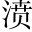
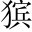

月、日，愈再拜一雲「應博學宏詞前進士韓愈謹再拜上書舍人閣下」。。天池之濱，大江之焚。○天池，謂南海也。《莊子》:「南冥者，天池也。」濱，水際。，曰有怪物焉，水涯。，蓋非常鱗凡介之品彙匹儔也怪物，龍之別名。。其得水，變化風雨，上下於天不難也匯，類也。○總領一句。下一連六轉。。其不及水，蓋尋常尺寸之間耳。無高山、大陵、曠途、絕險為之關隔也得水，一轉。，然其窮涸，不能自致乎水，為頓宕。獺之笑者，蓋十八九矣賓。。如有力者，哀其窮而運轉之，蓋一舉手、一投足之勞也，小獺也。○不及水，二轉。。然是物也，負其異於眾也，且曰：「爛死於沙泥，吾寧樂之。若俛頓宕。首帖耳，搖尾而乞憐者，非我之志也同俯。。」是以有力者遇之，熟視之若無睹也。其死其生，固不可知也氣骨矯矯，明明託物自喻。○不肯乞憐，三轉。。
今又有有力者當其前矣，聊試仰首一鳴號焉，庸詎知有力者不哀其窮而忘一舉手、一投足之勞，而轉之清波乎仰首鳴號，五轉。句句抱前，句句刺心。？其哀之，命也。其不哀之，命也。知其在命，而且鳴號之者，亦命也作三疊，總結。六轉。。愈今者實有類於是一篇皆是譬喻，只一句歸結自己，甚妙。。是以忘其疏愚之罪，而有是說焉。閣下其亦憐察之。
此貞元九年宏詞試也。無端突起譬喻，不必有其事，不必有其理，卻作無數曲折，無數峰巒，奇極、妙極。